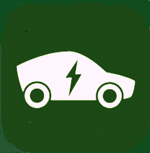
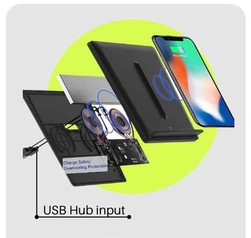
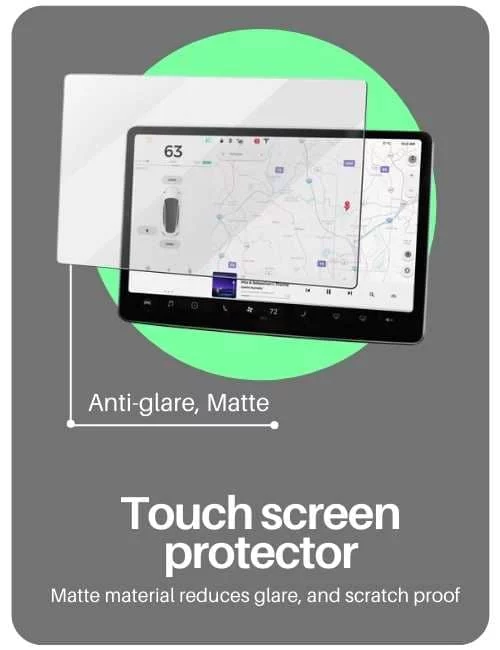
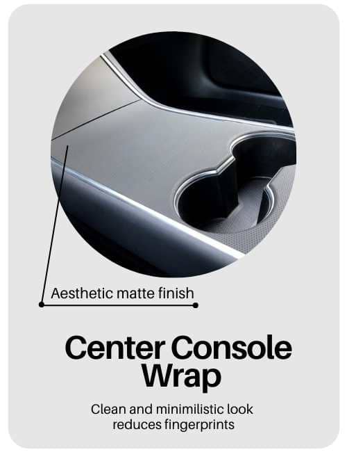
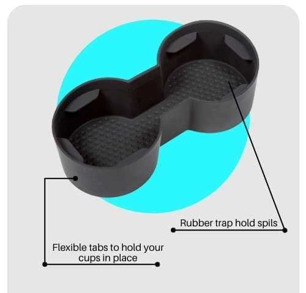
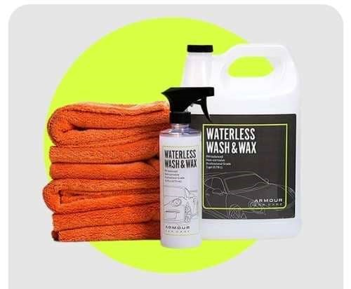

|  | Home | vehicles | solar panels | accessories | account |
|---|
| Model | About The Product | price | |
|---|---|---|---|
| HOME CHARGER | Nothing can beat the joy of charging your ev while your asleep with a dedicated home electric vehicle charger.An electric car charger for a home is a must-have accessory for proud EV owners. Charging an Ev overnight results in hassle-free mornings with no worries of finding spots for a vaccant charging station.Home charging is convenient and inexpensive,most electric vehicle(Battery electric vehicles and hybrid electric vehicles)owners do more than 70% of their charging at home before starting their day. |
 | ₹20,000 Buy now |
| TOUCHSCREEN PROTECTOR | Touchscreen being the most important and interacted part of your PHI electric car, it is very susceptible to scratches and fingerprints. The glare from the glossy PHI touchscreen can be problematic for owners while driving in both model x1 and f type. |  |
₹35,000-₹50,000 Buy now |
| CENTER CONSOLE WRAP KIT | By now you have experienced the fingerprint marks over the glossy black interior of your favorite Tesla electric car. The shiny plastic material can be a big turn-off for the aesthetic ones. Meanwhile, a matte center console wrap can level up the interior of your electric car. The fingerprint stains can be a bit irritating to wipe off every time you place your hand over your console. A lot of Tesla center console wraps are available nowadays gives a minimalist lean look to your car. Apart from the aesthetic point of view, it prevents your car interior from permanent scratches. |
 |
₹20000 Buy now |
| CUP HOLDER INSERTS AND LINERS | The fear of spilling beverages on a bumpy ride can be mitigated with a rubberized cub holder for PHI electric car. The default ones seem to be extra-large; a rubber cup holder insert will give a proper grip to mugs and cups while driving. It will drastically reduce the efforts to clean if anything gets spilled over cup holders or center console. These extra Tesla cup holder inserts keep your car from smell and dirt. |  | ₹8000 Buy now |
| WATERLESS CAR WASH AND CLEANING KIT | Waterless car wash works great in cold climates when washing with water becomes really difficult during chilly mornings. These Tesla car washes and cleaners clean without leaving streaks which would otherwise be very frustrating to wipe off. |  | ₹5000 Buy now |